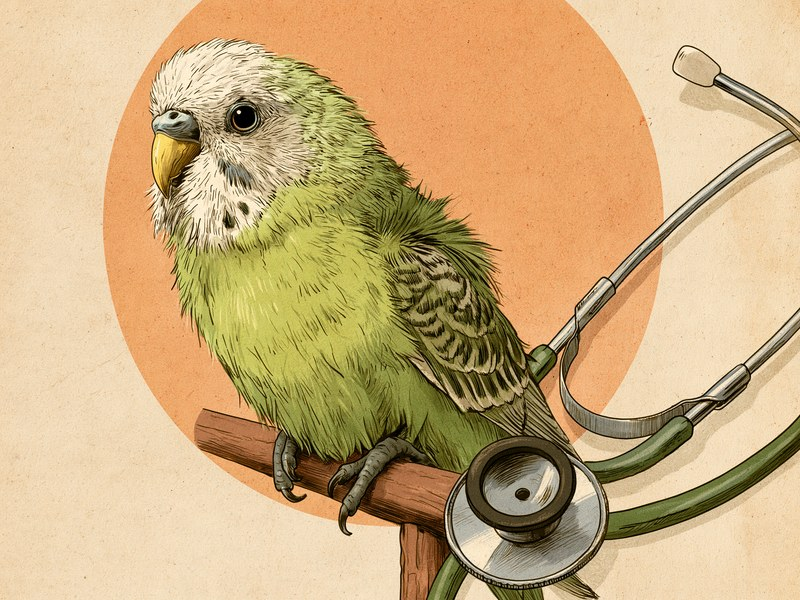

インコや文鳥は、体が小さいうえに、具合が悪くてもそれを隠そうとする習性があります。だからこそ「羽を膨らませていないか」「便の色はいつも通りか」「食べ方や呼吸の音に変わりはないか」という毎日の小さな観察が、体調不良に早めに気づくいちばんの手がかりになります。 A budgie or a Java sparrow is tiny, and on top of that, birds tend to hide it when they feel unwell. That is why a few simple daily checks - fluffed-up feathers, the colour of the droppings, how it eats and how it breathes - are the best way to catch trouble early.
この記事は獣医師の監修を受けておらず、AIの制作支援を受けた個人サイトの情報整理です。緊急時や迷うときは、鳥を診る動物病院へ連絡してください(運営者情報)。挙げている病院名は出典の紹介で、当サイトとの提携・広告関係はありません。
文鳥・インコが弱っているサイン:部位別の一覧
「なんとなく元気がない」と感じたとき、どこを見ればよいかを部位ごとに整理しました。米国鳥類獣医師会(AAV)、VCA Animal Hospitals、鳥を診る日本の動物病院(アロハオハナ動物病院・ダイゴペットクリニック・東中野アック動物医療センター)の資料に挙がっている変化をまとめています。ひとつでも当てはまれば、次の項の緊急度の目安と合わせて、動物病院への連絡を考えてください。
| 見る場所 | 気をつけたい変化 |
|---|---|
| 目 | 閉じがち、目やに、赤み、目の周りの腫れや羽の抜け |
| くちばしと鼻 | 鼻やくちばしの分泌物、鼻の周りのかさぶた状の汚れ、くちばしや爪の伸びすぎ |
| 呼吸 | 口を開けて呼吸する、尾を上下させる、呼吸音がいつもと違う |
| 羽 | 膨らんだままが続く、ぼさぼさ、羽が折れる・抜ける・かじる、換羽が長引く |
| 脚と足 | 止まり木に止まらず床にいる、片脚を上げる・足をかばう、足の裏のただれ |
| フン | 色・量・水分・においの変化(見方は後の項で説明します) |
| 食欲と飲水 | 食べる量が減る、水を飲みすぎる |
| 行動 | 活動量の低下、眠る時間が増える、声の変化・鳴かなくなる、いつもと違う攻撃性 |
この一覧の多くは鳥全般についての資料によるもので、文鳥に限った一覧は確認できていません。
出典を見る(文鳥・インコが弱っているサイン)
出典: VCA Animal Hospitals「Recognizing the Signs of Illness in Pet Birds」 / アロハオハナ動物病院(愛知県豊田市)「鳥類における一般的な重症な症状について」 / ダイゴペットクリニック(愛知県) / 東中野アック動物医療センター(東京都) / 米国鳥類獣医師会(AAV)「Signs of Illness in Companion Birds」 / VCA Animal Hospitals「Birds: Abnormal Droppings」 / 森下小鳥病院(東京都台東区) / バードプロ 鳥類専門動物病院(池袋)
急いで連絡したいサインと、早めに受診したい変化
迷ったら、早めに動物病院へ連絡してください。どのくらい急ぐかの目安は、病院や学会によって区分が違います。ここでは、愛知県豊田市のアロハオハナ動物病院が示している3段階を表にしました。この分け方はこの病院の資料によるもので、資料により幅があります。表は要約で、同じ資料では翼・脚・頭の位置がおかしいときも「当日中」に入っています。
ただし、区分は学会や病院で違います。米国鳥類獣医師会(AAV)は、鼻・目・口からの分泌物、体重や体の状態の低下、食べる量や飲む量の減少・過多、フンの大きな変化なども「すぐに獣医師へ」のサインに含めています。東中野アック動物医療センター(東京都)は口を開けた呼吸や止まり木にとまれない状態を、ダイゴペットクリニック(愛知県)は尾が大きく上下する呼吸や止まらない出血などを、急いで相談するサインとしています。
開口呼吸については、もも小鳥の動物病院は、暑さや興奮のあとに数分で収まる場合を区別して説明しており、バードプロ(池袋)は、一日に何度も起きる、ずっと続く、ほかの症状を伴う場合は相談としています。一方、東中野アック動物医療センターは、口を開けた呼吸を急いで連絡するサインに挙げています。飼い主が「収まった」と判断するのは難しく、暑い環境にいたとき、尾の上下・首を伸ばす・ぐったり・膨羽を伴うときは、待たずに連絡してください。迷ったら電話で相談を。
| 目安 | 例 |
|---|---|
| 数時間以内 | けいれん・失神・ふらつき、いきむ・卵が見える、出血や骨折が疑われる外傷、中毒物質を食べた・触れた疑い |
| 当日中 | 羽を膨らませてじっとしている、急な食欲低下、開口呼吸など普段と違う呼吸、多飲や尿の増加、繰り返す吐き戻し、突然のびっこ |
| 遅くとも2〜3日以内 | 体重の変化、くちばし・鼻・目の分泌物、声の変化・鳴かなくなる、フンの変化 |
「遅くとも2〜3日以内」は、待ってよい日数ではなく、この日までに相談する上限の目安です。資料の区分が食い違うときは、いちばん早い区分に合わせてください。
出典を見る(急いで連絡したいサインと、早めに受診したい変化)
出典: アロハオハナ動物病院(愛知県豊田市)「鳥類における一般的な重症な症状について」 / 米国鳥類獣医師会(AAV)「Signs of Illness in Companion Birds」 / 東中野アック動物医療センター(東京都) / ダイゴペットクリニック(愛知県) / もも小鳥の動物病院 / バードプロ 鳥類専門動物病院(池袋)
まず覚えたい初期サイン:膨らんだ羽、便の色、食欲、羽づくろい
鳥の体調不良でまず覚えたいのが「膨羽(ぼうう)」です。羽を膨らませてまん丸になった姿は寒いときや体調が悪いときに見られるサインで、具合が悪いと全身の羽が膨らみ、止まり木からケージの床に降りてしまうことも多くなります。温めても元に戻らず床に降りたままじっとしている場合は体調不良のサインです。温度の目安や保温の道具は飼育アイテムガイドで紹介しています。
次に便です。毎日目にするだけに気づきやすい健康のバロメーターで、黒っぽい便、赤っぽい便、黄色っぽい便への変化は体の中で何かが起きているサインかもしれません。敷き紙を替えるときに色を見る習慣をつけておくと気づきやすくなります。食欲がない、羽づくろいが明らかに多い、といった変化も体調不良のサインです。
鳥は弱った姿を隠す:ささいな変化の時点で受診したい理由
鳥には弱った姿を隠そうとする習性があります。これは鳥専門やエキゾチックアニマルを診る複数の動物病院が独立して説明している基本的な性質です。野生では弱った個体が捕食者に狙われやすいため、具合が悪くても元気なふりをするようになったと言われ、飼い主の目の前の鳥もこの習性を持ったまま暮らしているのが大事な点です。
つまり、飼い主が「明らかに具合が悪そうだ」と気づいたときには、鳥はもう隠しきれないほど弱っている可能性があります。鳥専門の動物病院は、食べ方が少ない、呼吸音が荒いなど、ささいな変化を感じた時点で早期の診察を受けるよう呼びかけています。「様子を見てから」ではなく「気になった時点で」が鳥の受診の合言葉で、前の項の膨羽や便の色の変化も見逃してはいけないサインだと分かります。
出典を見る
出典: バードプロ 鳥類専門動物病院(池袋、弱った姿を隠す習性とささいな変化での早期受診を明記) birdpro.co.jp / ダイゴペットクリニック(愛知県) info-dpc.net / すみか動物病院(埼玉県) sumika-ah.com / とくしま鳥の病院(徳島) tokushimabirdclinic.com
そのう炎:頻繁なあくび、口のにおい、嘔吐が初期のサイン
「そのう」は、鳥の首のつけ根あたりにある、食べたものを一時的にためておく袋のような器官です。ここに細菌・真菌(カビ)・原虫が感染して炎症を起こすのが「そのう炎」で、鳥がかかりやすい病気のひとつです。初期のサインは、頻繁にあくびをする、口から嫌なにおいがする、吐く、といったもの。鳥のあくびは健康なときにも見られますが、回数が多い場合はそのうに違和感があるのかもしれません。放置すると重篤化するため、「あくびが多いだけ」と見過ごさず、においや嘔吐とあわせて気になる様子があれば早めに動物病院で診てもらってください。
出典を見る
出典: SBIプリズム少短(鳥のそのう炎) sbiprism.co.jp
メガバクテリア症:セキセイインコに多く、直前まで元気でも急に発症する
メガバクテリア症はセキセイインコに多いとされる病気です。初期のサインは、吐く・吐き出す、黒っぽい便や未消化の粒がそのまま出てくる便、食欲低下、体重減少など。無症状のまま経過することもあり、直前まで元気でも急に発症して重症化することがあるため、「昨日まで普通だったのに」という事態が起こりうる病気だと知っておいてください。治療は抗真菌薬が基本で早期なら数週間で完治しうるため、セキセイインコと暮らしているなら便の状態と体重の変化に目を配りましょう。
出典を見る
出典: よしだ動物病院(鳥のメガバクテリア症) yoshida-ah.jp
卵詰まりとPBFD:メスの急な不調と、若い鳥の羽毛の異常
メスの鳥で知っておきたいのが「卵詰まり」です。産むはずの卵が体の中にとどまる状態で、初期のサインはぐったりして苦しそう、体力を消耗、便秘といった様子です。一羽飼いでもメスは卵を産むことがあるため「オスと一緒じゃないから関係ない」とは考えず、ぐったりして苦しそうなときは卵詰まりの可能性を頭に置いてください。放置すると命に関わるため、急いで動物病院へ相談することが大切です。
出典を見る
出典: ちゅら動物病院(文鳥の卵詰まり) chura.life
もうひとつ、若い鳥で注意したいのが「PBFD(オウム類嘴羽毛病)」です。サーコウイルス科のウイルスによる感染症で3歳頃までの若い鳥がかかりやすいとされています。症状は二タイプあり、急性型では食欲不振・下痢・羽毛の異常が、慢性型では羽毛が折れる、羽軸がよじれるといった異常が換羽(羽の生え替わり)のたびに進行します。「生え替わるたびに羽の様子がおかしくなっていく」と感じたらこの病気を疑うきっかけに。感染した鳥の排泄物・分泌物・羽毛から口や空気を通して広がるため、複数の鳥を飼っている場合はとくに注意が必要で、新しく迎えるときは若い鳥ほどこのリスクを知っておくと安心です。
出典を見る
出典: アニコム損保 どうぶつ病気大百科(PBFD) anicom-sompo.co.jp
定期健診(バードドック):鳥だからこそ「元気なうちに診てもらう」
鳥は隠すし急に発症するしで気づくのは難しく、だからこそ大切なのが定期健診です。鳥類は犬や猫より予防医学の研究が遅れているとされ、元気なうちに定期健診(バードドック)で早期発見につなげることが重要だと鳥を診る動物病院が説明しています。頻度は病院により「年1〜2回」〜「年2〜4回」と幅があり統一基準はありませんが、目安は年1回以上、できれば複数回で、お迎え直後や年齢を重ねたときはかかりつけ医に相談を。鳥はすべての動物病院で診てもらえるわけではないため、「エキゾチックアニマル」や「鳥専門」を掲げる動物病院を選ぶのが望ましく、近くに診てくれる病院があるかは体調を崩す前の元気なうちに調べておくと安心です。
出典を見る
出典: バードプロ 鳥類専門動物病院 birdpro.co.jp / ダイゴペットクリニック info-dpc.net / すみか動物病院 sumika-ah.com / とくしま鳥の病院 tokushimabirdclinic.com
体重の記録のしかた:週1回、同じ条件で量る
体重は、見た目では分かりにくい変化を数字でとらえられる手がかりです。米国鳥類獣医師会(AAV)は、電子のグラムスケールを用意して週1回量ることを勧めています。アロハオハナ動物病院(愛知県豊田市)も週1回を目安としています。量るときは、毎回同じ条件にします。ことしばペットクリニック(山口県宇部市)は、朝の給餌前に量ると比べやすいとし、記録を残すことも勧めています。
基準になるのは、その子のふだんの体重です。品種ごとの標準体重の数字は、病院や学会の資料では確認できていないため、ここには載せません。まずは元気なときに何度か量って、ふだんの値を知っておくことが出発点です。BEN犬猫エキゾの病院(千葉市)は、調子が悪そうなときには体重を量ることを勧めていて、朝夕の2回とする記述があります。
どのくらい変わったら受診か、という数字は資料により幅があります。米国鳥類獣医師会は、体重が急に減る・増えるのは異常で、ふだんの体重から上下10%動いたら獣医師へ、としています。アロハオハナ動物病院は、2週間で5%以上の体重減少を受診の目安としています。どちらの数字に当てはまるか迷ったら、早めに動物病院へ連絡してください。この数字に届かなければ問題がない、という意味ではありません。体重が変わらなくても、食欲の低下・膨羽・フンの変化があれば相談してください。具合が悪そうで量るのに手間取るときは、量らずに先に連絡を。
出典を見る(体重の記録のしかた)
出典: 米国鳥類獣医師会(AAV)「Signs of Illness in Companion Birds」 / アロハオハナ動物病院(愛知県豊田市)「鳥類における一般的な重症な症状について」 / ことしばペットクリニック(山口県宇部市) / BEN犬猫エキゾの病院(千葉市)
フンの見方と記録:便・尿酸・尿の3つに分けて見る
鳥のフンは、便(緑〜茶色の固まり)・尿酸(白〜クリーム色)・尿(透明な水分)の3つでできています。正常なフンは、形のある便、白〜クリーム色の尿酸、透明な尿とされています。食べ物(果物や着色料)で色が一時的に変わること、朝一番のフンは大きく形が崩れやすいこと、緊張で一時的にゆるくなることもあります。米国鳥類獣医師会(AAV)は、一度の異常で慌てず、ふだんの環境で数回のフンを見比べることを勧めています(元気や食欲の低下を伴うなら、待たずに連絡を)。
気をつけたい変化は、尿酸が黄色・緑・ピンクに変わる、血が混じる、強いにおい、粒のままの便、黒い便、濃い緑の便などです。森下小鳥病院(東京都)は、粒のままの便・黒い便・濃い緑の便・緑色の尿・ピンクの尿を「至急病院へ」、元気や食欲はあるが尿酸が黄色い場合は「早めに病院へ」としています。VCA Animal Hospitalsは、異常が24時間を超えて続くときは診察を、としています。24時間は猶予ではありません。元気や食欲がない、血が混じる、黒や濃い緑のフンのときは、待たずに連絡してください。区分は資料により幅があるので、迷ったら早めに動物病院へ連絡してください。
日付・体重・食欲・フンの様子・気づいたことを、手帳やスマホにメモしておくと、受診のときに伝えやすくなります。
出典を見る(フンの見方と記録)
出典: VCA Animal Hospitals「Birds: Abnormal Droppings」 / 森下小鳥病院(東京都台東区) / 米国鳥類獣医師会(AAV)「Signs of Illness in Companion Birds」
- 温めても羽を膨らませたまま(膨羽)、止まり木から床に降りてじっとしている
- 便が黒色・赤色・黄色に変わった、未消化の粒がそのまま出てくる
- いつもより食べ方が少ない、食欲がない、体重が減ってきた
- 呼吸音が荒い
- 頻繁にあくびをする、口から嫌なにおいがする、吐く(そのう炎の可能性)
- メスがぐったりして苦しそう、便秘をしている(卵詰まりの可能性。命に関わるため急いで受診)
- 換羽のたびに羽毛が折れる・羽軸がよじれるなど、羽の異常が進行している(PBFDの可能性)
- 羽づくろいがいつもより明らかに多い
鳥の健康観察は、「羽は膨らんでいないか」「便の色はいつも通りか」「食べ方と呼吸の音に変わりはないか」の三つに絞るとぐっと続けやすくなります。毎朝の敷き紙の交換とごはんの時間のついでにこの三つを確かめる習慣があれば、弱った姿を隠す鳥の小さな変化にも気づける確率が上がります。膨羽の背景にある温度管理の道具は、インコ・文鳥の飼育アイテムガイドもあわせてどうぞ。
ミニクイズ:昨日まで元気に食べていた鳥なら、今日の便が黒っぽくても数日は様子を見てよい?(タップして答えを見る)
こたえ×。鳥には弱った姿を隠そうとする習性があるため、飼い主が気づいたときには思ったより弱っていることがあります。黒色便はメガバクテリア症などの初期サインにもなりうるもので、この病気は直前まで元気でも急に発症して重症化することがあります。鳥専門の動物病院は、ささいな変化を感じた時点での早期受診を呼びかけています。